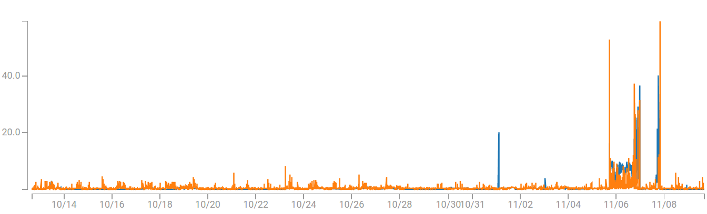
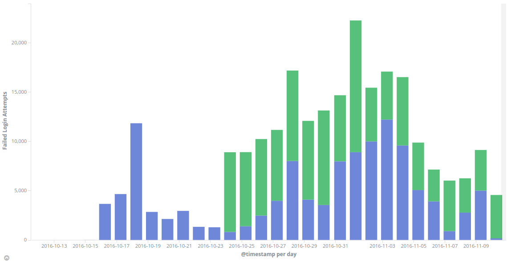

Йордан Джамбазов
Founder / Програмист @ IO Era
Django - данните, които трябва да слушаме
Данни
- логове
- traceback
- събития
Как да слушаме данните?
- SSH към сървъра
- Намирате логовете
- Използвате awk, cat, tail, grep, wc и sed
- Pipe|на|командите|докато|е|необходимо
- Load Balancing? goto step 1 на следващия сървър
Ако имате проблем, използвайте regex
Сега вече имате 2 проблема
Времеви ред

1993-02-27T18:25:01+02:00: wonderful moment of time
[930227182800.00] [core:notice] [pid 9301] child 1 waiting for 3 minutes
Feb 27 18:30:00 jordan-laptop coolservice[957]: and all these events
[730837800.0] - represent another wonderful moment
1993-02-27T18:30:01+02:00: in different log format
{27/Feb/93 18:30:00} - when a legend
[930227183000.00] [core:notice] [pid 9302] was born
Demo
Ползите от Sentry
- Context
- Управление на задачите
- Лесна интеграция с Django и не само
- ...
Мониторинг


Shipper -> Broker -> Indexer
Latency

Неуспешни опити за SSH

Filebeat
filebeat:
prospectors:
- paths:
- /var/log/auth.log
- /var/log/syslog
input_type: log
document_type: syslog
Filebeat (2)
output:
logstash:
hosts: ["elastic.ioera.com:5044"]
bulk_max_size: 256
Logstash input
input {
beats {
port => 5044
}
}
Logstash filter
filter {
if [type] == "syslog" {
grok {
match => { "message" => "%{SYSLOGTIMESTAMP:syslog_timestamp} %{SYSLOGHOST:syslog_hostname} %{DATA:syslog_program}(?:\[%{POSINT:syslog_pid}\])?: %{GREEDYDATA:syslog_message}" }
add_field => [ "received_at", "%{@timestamp}" ]
add_field => [ "received_from", "%{host}" ]
}
date {
match => [ "syslog_timestamp", "MMM d HH:mm:ss"]
}
}
}
Logstash output
output {
elasticsearch {
hosts => ["localhost:9200"]
manage_template => false
index => "%{[@metadata][beat]}-%{+YYYY.MM.dd}"
document_type => "%{[@metadata][type]}"
}
}
Beats + Logstash + Elasticsearch + Kibana
=
Elastic Stack
Оперативна Интелигентност
Monitoring
vs
Operational Intelligence
Действие
- Повишено latency -> alarm -> добавяне на сървър
- Слабо оползотворяване -> премахване на сървър
- Повече предвидени продажби от складовата наличност -> alert
- Ненормално поведение на user -> ограничаване на достъп
Как да слушаме?
Разглеждайте логовете
- като част от инфраструктурата
- като част от приложението
- като част от данните